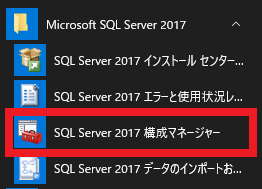

こんにちは、Japan Developer Support Core チームです🗻
いつも Team Foundation Server / Azure DevOps Server をご利用いただき、ありがとうございます。
突然ですが、Azure DevOps にはオンプレミス版とクラウド版の 2 種類の製品があることをご存じでしょうか？
・Azure DevOps Services (クラウド版)
・Azure DevOps Server または Team Foundation Server (オンプレミス版)
今回の記事ではオンプレミス版である Team Foundation Server / Azure DevOps Server 全般で生じた問題におけるトラブルシューティング用のデータ採取方法についてご紹介していきます。
もし現在クラウド版をご利用の方は、別途トラブルシューティング用の記事がございますので、以下の記事をご参照ください↓
Azure DevOps Services トラブルシューティング用のデータ採取について | Japan Developer Support Core Team Blog
Azure Pipelines のトラブルシューティング用データ採取について | Japan Developer Support Core Team Blog
ここで、少しだけオンプレミス版の製品の歴史についてご紹介します。
最初に登場した製品は 2006 年 6 月 17 日にリリースされた「Team Foundation Server 2005」で、Visaul Studio 2005 Team System (VSTS) と連携するサーバー機能としてリリースしたこともあり、正式名称は “Visual Studio Team Foundation Server 2005” でした。
頭の “Visual Studio” が無くなったのは、次のリリースである Team Foundation Server 2008 からです。
そして、Team Foundation Server の後継製品として 2019 年に「Azure DevOps Server」という名称でリブランドされました。
現在 (2024 年 03 月 04 日時点) までにリリースされている Team Foundation Server および Azure DevOps Server のバージョンとサポート終了日は以下のとおりです。
| 製品バージョン | サポート終了日 |
|---|---|
| Team Foundation Server 2005 | 2016 年 07 月 12 日にサポート終了 |
| Team Foundation Server 2008 | 2018 年 04 月 10 日にサポート終了 |
| Team Foundation Server 2010 | 2020 年 07 月 14 日にサポート終了 |
| Team Foundation Server 2012 | 2023 年 01 月 10 日にサポート終了 |
| Team Foundation Server 2013 | 2024 年 04 月 09 日にサポート終了 |
| Team Foundation Server 2015 | 2025 年 10 月 14 日にサポート終了 |
| Team Foundation Server 2018 | 2028 年 01 月 11 日にサポート終了 |
| Azure DevOps Server 2019 | 2029 年 04 月 10 日にサポート終了 |
| Azure DevOps Server 2020 | 2030 年 10 月 08 日にサポート終了 |
| Azure DevOps Server 2022 | 2033 年 01 月 11 日にサポート終了 |
なお、Team Foundation Server / Azure DevOps Server ではオンプレミス製品ということもあり、下図のとおり様々なテクノロジーが使用されております。
※参考
Team Foundation Server のアーキテクチャ | Microsoft Docs
アーキテクチャ - Azure DevOps | Microsoft Docs
様々なテクノロジーが使用されているということは、もし何か問題に遭遇した場合は、どのテクノロジー部分で問題が生じているか正確に問題を切り分けることが問題の解決に向けて非常に重要な作業となります。
正確な状況把握と共に、弊社サポート サービスとお客様との間で認識合わせを行うためにも必要な各種情報の採取手順について、以下に具体的にご説明します。
また、本記事でご紹介する情報採取につきましては、必ずしもすべての情報が必要ではございません。
採取する情報量も多く、情報採取自体が難しいご状況もあるかと思いますので、まずはお客様がわかる範囲で情報採取いただき、あとは必要に応じてエンジニアがヒアリングいたします。
各種情報
1. 環境情報を採取する
2. イベントログを採取する
3. SQL Server エラーログを採取する
4. 構成ログを採取する
5. IIS ログを採取する
1. 環境情報を採取する
1-1. Team Foundation Server / Azure DevOps Server を構成しているサーバー間の関係性やネットワークが分かる構成図をご提供ください
前提として Team Foundation Server / Azure DevOps Server は主に以下の 3 つの層で構成されております。
・アプリケーション層
・データ層
・クライアント層
これらを 1 台のサーバー上に構成することもできますが、各層ごとにサーバーを分けて構成することが可能です。
Team Foundation Server / Azure DevOps Server ではデータ層として Microsoft SQL Server を利用しておりますが、たとえばこのデータ層は必ずしもアプリケーション層と同じサーバーに構成する必要はなく、別のサーバーをデータ層として構成するシナリオが多くあります。
※参考
デュアル サーバー構成を設定する - Azure DevOps | Microsoft Docs
また、利用者が数千～数万に増えた場合を考慮して、多数のサーバーにアプリケーション層をインストールすることで、AlwaysOn 可用性グループにて高可用性を確保することも可能です。
※参考
複数のサーバーに&構成をインストールする - Azure DevOps | Microsoft Docs
そして、これらの層をホストするマシンは、物理サーバーであるか、仮想サーバーであるか、などの情報も、調査に必要となる場合があります。
また、ビルドサーバーが別のサーバーに構成されている場合も考えられますので、このようなサーバー間の構成が分かる図などをご提供いただけますと調査の助けとなります。
1-2. 各サーバーのシステム情報をご提供ください
コマンド プロンプトから以下のコマンドを実行し、Team Foundation Server / Azure DevOps Server が構成された各サーバーのシステム情報をご提供ください。
複数のサーバーにて構成されている場合は、どのサーバーによるシステム情報であるか分かる形でファイル名をリネームください。
コマンド プロンプトから以下のコマンドを実行します
1
msinfo32 /nfo %UserProfile%\desktop\msinfo32.nfo
コマンド実行時は、下図のようなポップアップ画面が表示されるので完了するまで待ちます
完了後、現在ログインしているユーザーのデスクトップ配下に “msinfo32.nfo” という名称のファイルが保存されますので、こちらのファイルをご提供ください
1-3. ドメインの構成についての情報をご提供ください
WORKGROUP 環境に構成された場合はこちらの情報は不要です。
ドメイン環境を構成されている場合、ドメインの信頼関係に問題が生じた際の問題として、ユーザーを認識できない、認証できないなどといった問題が生じる場合がございます。
これらの関係性を正確に把握するためにも、ドメイン間の構成について分かるような構成図をご提供いただけますと調査の助けとなります。
※参考
Team Foundation Server の信頼とフォレストに関する考慮事項 | Microsoft Docs
1-4. 管理コンソールのスクリーン ショットをご提供ください
スタートメニューより Team Foundation Server / Azure DevOps Server の管理コンソールを起動し、[アプリケーション層] を選択した際の画面のスクリーン ショットをご提供ください。
”アプリケーション層” は一画面に入りきらないため、お手数ですがスクロールいただき数枚に分けてスクリーン ショットを採取いただきますようお願い申し上げます。
もし他の機能 (たとえばレポートやプロキシ サーバー) についても構成されているようであれば、管理コンソールから確認できる以下の項目についても画面のスクリーン ショットをご提供ください。
バージョンごとにご利用できる機能等が変わることによって、管理コンソールに表示されるメニューも変化いたしますため、違いが分かるようバージョンごとの管理コンソール画面のスクリーン ショットについて以下に述べます。
<Team Foundation Server 2013>
<Team Foundation Server 2015>
<Team Foundation Server 2017>
<Team Foundation Server 2018>
<Azure DevOps Server 2019>
<Azure DevOps Server 2020>
<Azure DevOps Server 2022>
1-4. SQL Server のバージョン情報をご提供ください
スタート メニュー -> [Microsoft SQL Server
] -> [SQL Server インストール センター] を起動します SQL Server インストールセンター画面の [ツール] -> [インストール済み SQL Server 機能の検出レポート] を選択します
各サービスのバージョン情報の詳細情報がブラウザに表示されます
Ctrl キー + S キーを同時押し -> Web ページを「Web アーカイブ、単一のファイル (*.mhtml)」形式で保存し、ご提供ください

2. イベントログを採取する
以下の手順に沿って、サーバー上のイベントログを採取およびご提供ください。
Windows キー + R キーを同時押しします
“eventvwr” と入力しイベント ビューアを起動します
保存対象のイベントログ (4 種類) を右クリックし、”すべてのイベントを名前を付けて保存” を選択し、 イベント ファイル (*.evtx) 形式で任意のファイル名を指定し保存します
アプリケーション : [Windows ログ] -> [Application]
システム : [Windows ログ] -> [システム]
TFS - Debug : [アプリケーションとサービス ログ] -> [Microsoft-Team Foundation Server] -> [Debug]
TFS - Extended : [アプリケーションとサービス ログ] -> [Microsoft-Team Foundation Server] -> [Extended]
- 上記の手順で採取したイベントログをご提供ください
3. SQL Server エラーログを採取する
以下の手順に沿って、データ層である SQL Server の Log フォルダを採取およびご提供ください。
スタート メニュー -> [SQL Server
構成マネージャー] を選択します
[SQL Server のサービス” -> [SQL Server(<該当のインスタンス名>)] -> 右クリック -> [プロパティ] を選択します
“起動時のパラメータ” タブ - “-e” から始まるパラメータの文字列を確認します
[例]
; -eC:\Program Files\Microsoft SQL Server\MSSQL13.MSSQLSERVER\MSSQL\Log\ERRORLOG
- 手順 3 で確認したディレクトリ パスへ移動し、”Log” フォルダ直下全てのファイルを採取し、ご提供ください
補足
SQL Server エラーログとイベントログの採取方法につきましては、以下のブログでも図入りで紹介しております。
より詳細な内容は以下のブログでご紹介しておりますので、こちらも併せてご覧いただけますと幸いです。
※参考
[SQL Troubleshooting] 第1回 : Tips - SQL Server エラーログとイベント ログを採取する (SQL 2000 ～ 2014) Ver 2.0
https://docs.microsoft.com/en-us/archive/blogs/jpsql/sql-troubleshooting-1-tips-sql-server-s
4. 構成ログを採取する
以下のディレクトリにアクセスし Team Foundation Server / Azure DevOps Server 構成時のログをご提供ください。
Team Foundatin Server の場合
%ProgramData%\Microsoft\Team Foundation\Server Configuration\Logs
Azure DevOps Server の場合
%ProgramData%\Microsoft\Azure DevOps\Server Configuration\Logs
5. IIS ログを採取する
以下のアーキテクチャ図でも分かるとおり Team Foundation Server / Azure DevOps Server は インターネット インフォメーション サービス (以下 IIS) 上に管理ツールや Web サービスが配置されております。
Web ポータルから何かの操作を行った際は、HTTP(S) リクエストが実行されることとなり、これらのログが IIS 上に残されることとなります。
そのため、Web ポータルにサインインしようとしたが、通信に失敗する、認証に失敗する、といったエラーが生じている場合は、IIS に残されたログが調査に役立つこととなります。
5-1. 基本的なログ採取
IIS 側で必要な基本的なログにつきましては、以下のブログにてご案内がございますのでこちらをご参照ください。
IIS の調査に必要な基本的なログ情報について | Japan Developer Support Internet Team Blog
上記のブログをご確認いただき、以下のログを採取およびご提供ください。
・Windows の System／Application／Security イベント ログ (.evtx の形式でご提供ください)
・IIS ログ (原則、フォルダに存在するログ全てをご提供ください)
・IIS の構成ファイル
・HTTPERR ログ
5-2. 通信に関するログ採取
IIS の通信に関して、たとえばクライアントとサーバー間の通信が疑わしいような場合、以下のブログにてご案内しておりますログを採取およびご提供ください。
IIS の調査に必要な通信系のログ情報について | Japan Developer Support Internet Team Blog
最後に
今回は、Team Foundation Server / Azure DevOps Server で発生したトラブルをスムーズに解決するために、必要な各種情報の採取手順についてご紹介しました。
今後も Team Foundation Server / Azure DevOps Server のご利用にお役立ていただける情報を、どんどんご紹介していきたいと思いますので、どうぞよろしくお願いします！
本ブログの内容は弊社の公式見解として保証されるものではなく、開発・運用時の参考情報としてご活用いただくことを目的としています。もし公式な見解が必要な場合は、弊社ドキュメント (https://learn.microsoft.com や https://support.microsoft.com) をご参照いただくか、もしくは私共サポートまでお問い合わせください。